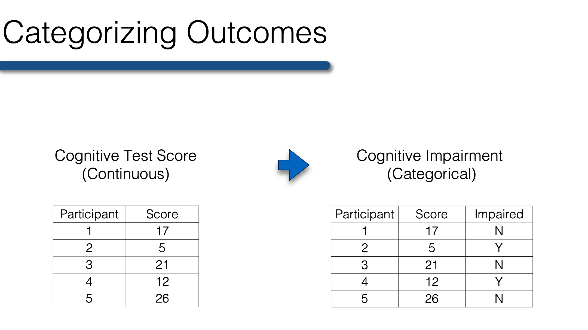
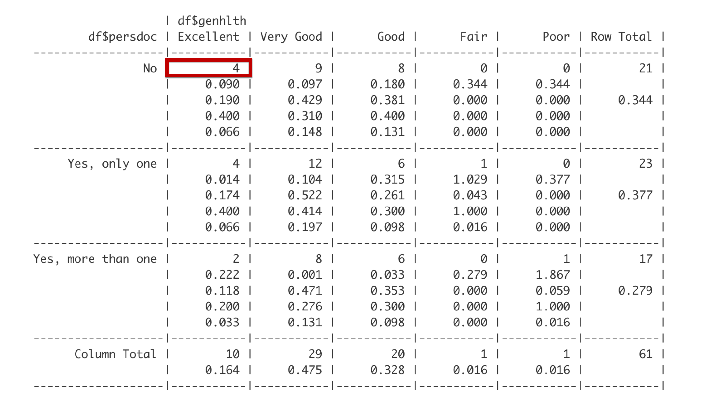
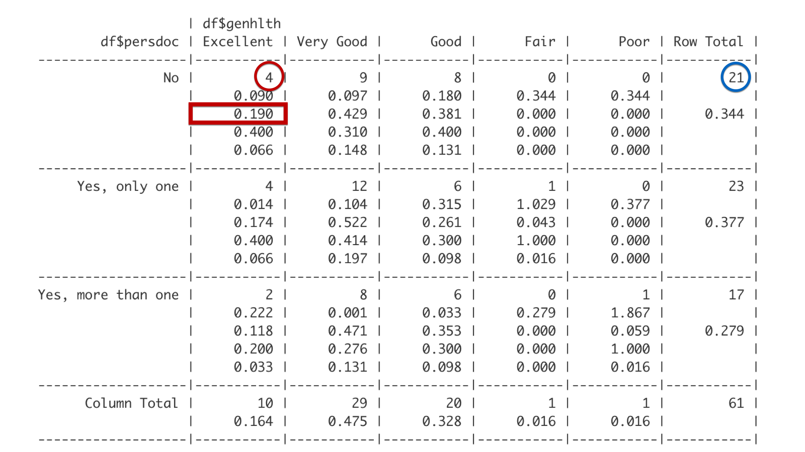

24 Describing the Relationship Between a Categorical Outcome and a Categorical Predictor
Generally speaking, there is no good way to describe the relationship between a continuous predictor and a categorical outcome.

So, when your outcome is categorical, the predictor must also be categorical. Therefore, any continuous predictor variables must be collapsed into categories before conducting bivariate analysis when your outcome is categorical. The best categories are those that have scientific or clinical meaning. For example, collapsing raw scores on a test of cognitive function into a categorical variable for cognitive impairment. The variable could be dichotomous (yes, no) or it could have multiple levels (no, mild cognitive impairment, dementia).

Once your continuous variables are collapsed you’re ready to create n-way frequency tables that will allow you to describe the relationship between two or more categorical variables. To start with, we will once again use our previously collected class survey data.
class <- tibble(
age = c(32, 30, 32, 29, 24, 38, 25, 24, 48, 29, 22, 29, 24, 28, 24, 25,
25, 22, 25, 24, 25, 24, 23, 24, 31, 24, 29, 24, 22, 23, 26, 23,
24, 25, 24, 33, 27, 25, 26, 26, 26, 26, 26, 27, 24, 43, 25, 24,
27, 28, 29, 24, 26, 28, 25, 24, 26, 24, 26, 31, 24, 26, 31, 34,
26, 25, 27, NA),
age_group = c(2, 2, 2, 1, 1, 2, 1, 1, 2, 1, 1, 1, 1, 1, 1, 1, 1, 1, 1, 1, 1,
1, 1, 1, 2, 1, 1, 1, 1, 1, 1, 1, 1, 1, 1, 2, 1, 1, 1, 1, 1, 1,
1, 1, 1, 2, 1, 1, 1, 1, 1, 1, 1, 1, 1, 1, 1, 1, 1, 2, 1, 1, 2,
2, 1, 1, 1, NA),
gender = c(2, 1, 1, 2, 1, 1, 1, 2, 2, 2, 1, 1, 2, 1, 1, 1, 1, 2, 2, 1, 1,
1, 1, 2, 1, 1, 2, 1, 1, 1, 2, 1, 1, 2, 2, 1, 2, 2, 1, 2, 2, 1,
1, 1, 1, 1, 1, 1, 1, 2, 2, 1, 1, 1, 1, 2, 2, 1, 1, 2, 1, 2, 1,
1, 1, 2, 1, NA),
ht_in = c(70, 63, 62, 67, 67, 58, 64, 69, 65, 68, 63, 68, 69, 66, 67, 65,
64, 75, 67, 63, 60, 67, 64, 73, 62, 69, 67, 62, 68, 66, 66, 62,
64, 68, NA, 68, 70, 68, 68, 66, 71, 61, 62, 64, 64, 63, 67, 66,
69, 76, NA, 63, 64, 65, 65, 71, 66, 65, 65, 71, 64, 71, 60, 62,
61, 69, 66, NA),
wt_lbs = c(216, 106, 145, 195, 143, 125, 138, 140, 158, 167, 145, 297, 146,
125, 111, 125, 130, 182, 170, 121, 98, 150, 132, 250, 137, 124,
186, 148, 134, 155, 122, 142, 110, 132, 188, 176, 188, 166, 136,
147, 178, 125, 102, 140, 139, 60, 147, 147, 141, 232, 186, 212,
110, 110, 115, 154, 140, 150, 130, NA, 171, 156, 92, 122, 102,
163, 141, NA),
bmi = c(30.99, 18.78, 26.52, 30.54, 22.39, 26.12, 23.69, 20.67, 26.29,
25.39, 25.68, 45.15, 21.56, 20.17, 17.38, 20.8, 22.31, 22.75,
26.62, 21.43, 19.14, 23.49, 22.66, 32.98, 25.05, 18.31, 29.13,
27.07, 20.37, 25.01, 19.69, 25.97, 18.88, 20.07, NA, 26.76,
26.97, 25.24, 20.68, 23.72, 24.82, 23.62, 18.65, 24.03, 23.86,
10.63, 23.02, 23.72, 20.82, 28.24, NA, 37.55, 18.88, 18.3,
19.13, 21.48, 22.59, 24.96, 21.63, NA, 29.35, 21.76, 17.97,
22.31, 19.27, 24.07, 22.76, NA),
bmi_3cat = c(3, 1, 2, 3, 1, 2, 1, 1, 2, 2, 2, 3, 1, 1, 1, 1, 1, 1, 2, 1, 1,
1, 1, 3, 2, 1, 2, 2, 1, 2, 1, 2, 1, 1, NA, 2, 2, 2, 1, 1, 1, 1,
1, 1, 1, 1, 1, 1, 1, 2, NA, 3, 1, 1, 1, 1, 1, 1, 1, NA, 2, 1,
1, 1, 1, 1, 1, NA),
genhlth = c(2, 2, 3, 3, 2, 1, 2, 2, 2, 1, 3, 3, 1, 2, 2, 1, 2, NA, 3, 2, 3,
1, 2, 2, 2, 4, 2, 2, 2, 2, 1, 2, 2, 1, 2, 2, 3, 3, 2, 1, 3, 3,
2, 2, 3, 3, 2, 3, 2, 2, 3, 5, 3, 2, 3, 2, 3, 3, 2, 2, 3, 3, 3,
1, 2, 2, 1, 3),
persdoc = c(1, 2, 2, 1, 2, 0, 0, 1, 2, 0, 2, 0, 1, 1, 1, 1, 1, 1, 1, 1, 0,
0, 1, 1, 1, 1, 2, 0, 0, 1, 1, 2, 1, 2, 0, 0, 2, 0, 0, 2, 2, 0,
NA, 0, 0, 0, 2, 0, 2, NA, 0, 2, 1, 1, 1, 2, 2, 0, 0, 0, 1, 2,
1, 1, 0, 0, 0, NA)
) %>%
mutate(
age_group = factor(age_group, labels = c("Younger than 30", "30 and Older")),
gender = factor(gender, labels = c("Female", "Male")),
bmi_3cat = factor(bmi_3cat, labels = c("Normal", "Overweight", "Obese")),
genhlth = factor(genhlth, labels = c("Excellent", "Very Good", "Good", "Fair", "Poor")),
persdoc = factor(persdoc, labels = c("No", "Yes, only one", "Yes, more than one"))
) %>%
print()## # A tibble: 68 × 9
## age age_group gender ht_in wt_lbs bmi bmi_3cat genhlth persdoc
## <dbl> <fct> <fct> <dbl> <dbl> <dbl> <fct> <fct> <fct>
## 1 32 30 and Older Male 70 216 31.0 Obese Very Good Yes, only one
## 2 30 30 and Older Female 63 106 18.8 Normal Very Good Yes, more than one
## 3 32 30 and Older Female 62 145 26.5 Overweight Good Yes, more than one
## 4 29 Younger than 30 Male 67 195 30.5 Obese Good Yes, only one
## 5 24 Younger than 30 Female 67 143 22.4 Normal Very Good Yes, more than one
## 6 38 30 and Older Female 58 125 26.1 Overweight Excellent No
## 7 25 Younger than 30 Female 64 138 23.7 Normal Very Good No
## 8 24 Younger than 30 Male 69 140 20.7 Normal Very Good Yes, only one
## 9 48 30 and Older Male 65 158 26.3 Overweight Very Good Yes, more than one
## 10 29 Younger than 30 Male 68 167 25.4 Overweight Excellent No
## # ℹ 58 more rows24.1 Comparing two variables
We’ve already used R to create one-way descriptive tables for categorical variables. One-way frequency tables can be interesting in their own right; however, most of the time we are interested in the relationships between two variables. For example, think about when we looked at mean height within levels of gender. This told us something about the relationship between height and gender. While far from definite, our little survey provides some evidence that women, on average, are shorter than men.
Well, we can describe the relationship between two categorical variables as well. One way of doing so is with two-way frequency tables, which are also sometimes referred to as crosstabs or contingency tables. Let’s start by simply looking at an example.
Below we use the same CrossTable() function that we used in the lesson on univariate analysis of categorical data. The only difference is that we pass two vectors to the function instead of one. The first variable will always form the rows, and the second variable will always form the columns. In other words, we can say that we are creating a two-way table of persdoc by genhealth.
df <- filter(class, !is.na(bmi_3cat)) # Drop rows with missing bmi
gmodels::CrossTable(df$persdoc, df$genhlth)##
##
## Cell Contents
## |-------------------------|
## | N |
## | Chi-square contribution |
## | N / Row Total |
## | N / Col Total |
## | N / Table Total |
## |-------------------------|
##
##
## Total Observations in Table: 61
##
##
## | df$genhlth
## df$persdoc | Excellent | Very Good | Good | Fair | Poor | Row Total |
## -------------------|-----------|-----------|-----------|-----------|-----------|-----------|
## No | 4 | 9 | 8 | 0 | 0 | 21 |
## | 0.090 | 0.097 | 0.180 | 0.344 | 0.344 | |
## | 0.190 | 0.429 | 0.381 | 0.000 | 0.000 | 0.344 |
## | 0.400 | 0.310 | 0.400 | 0.000 | 0.000 | |
## | 0.066 | 0.148 | 0.131 | 0.000 | 0.000 | |
## -------------------|-----------|-----------|-----------|-----------|-----------|-----------|
## Yes, only one | 4 | 12 | 6 | 1 | 0 | 23 |
## | 0.014 | 0.104 | 0.315 | 1.029 | 0.377 | |
## | 0.174 | 0.522 | 0.261 | 0.043 | 0.000 | 0.377 |
## | 0.400 | 0.414 | 0.300 | 1.000 | 0.000 | |
## | 0.066 | 0.197 | 0.098 | 0.016 | 0.000 | |
## -------------------|-----------|-----------|-----------|-----------|-----------|-----------|
## Yes, more than one | 2 | 8 | 6 | 0 | 1 | 17 |
## | 0.222 | 0.001 | 0.033 | 0.279 | 1.867 | |
## | 0.118 | 0.471 | 0.353 | 0.000 | 0.059 | 0.279 |
## | 0.200 | 0.276 | 0.300 | 0.000 | 1.000 | |
## | 0.033 | 0.131 | 0.098 | 0.000 | 0.016 | |
## -------------------|-----------|-----------|-----------|-----------|-----------|-----------|
## Column Total | 10 | 29 | 20 | 1 | 1 | 61 |
## | 0.164 | 0.475 | 0.328 | 0.016 | 0.016 | |
## -------------------|-----------|-----------|-----------|-----------|-----------|-----------|
##
## Ok, let’s walk through this output together…

Think of little box labeled “Cell Contents” as a legend that tells you how to interpret the rest of the boxes. Reading from top to bottom, the first number you encounter in a box will be the frequency or count of observations (labeled N). The second number you encounter will be the chi-square contribution. Please ignore that number for now. The third number will be the row proportion. The fourth number will be the column proportion. And the fifth number will be the overall proportion.

Reading the table of summary statistics from top to bottom, the row headers describe categories of persdoc, which are one, only one, and more than one.

Reading from left to right, the column headers describe categories of genhealth, which are excellent, very good, good, fair, and poor.

The bottom row gives the total frequency and proportion of observations that fall in each of the categories defined by the columns. For example, 10 students – about 0.164 of the entire class – reported being in excellent general health.

The far-right column gives the total frequency and proportion of observations that fall in each of the categories defined by the rows. For example, 23 students – about 0.377 of the entire class – reported that they have exactly one person that they think of as their personal doctor or healthcare provider.

And the bottom right corner gives the overall total frequency of observations in the table. Together, the last row, the far-right column, and the bottom right cell make up what are called the marginal totals because they are on the outer margin of the table.
Next, let’s interpret the data contained in the first cell with data.

The first number is the frequency. There are 4 students that do not have a personal doctor and report being in excellent health. 
The third number is the row proportion. The row this cell is in is the No row, which includes 21 students. Out of the 21 total students in the No row, 4 reported being in excellent health. 4 divided by 21 is 0.190. Said another way, 19% of students with no personal doctor reported being in excellent health.

The fourth number is the column proportion. This cell is in the Excellent column. Of the 10 students in the Excellent column, 4 reported that they do not have a personal doctor. 4 out of 10 is 0.4. Said another way, 40% of students who report being in excellent health have no personal doctor.

The last number is the overall proportion. So, 4 out of the 61 total students in this analysis have no personal doctor and report being in excellent health. Four out of 61 is 0.066. So, about 7% of all the students in the class have no personal doctor and are in excellent health.
Now that you know how to read the table, I want to point out a couple subtleties that may not have jumped out at you above.
The changing denominator. As we moved from the row proportion to the column proportion and then the overall proportion, all that changed was the denominator (the blue circle). And each time we did so we were describing the characteristics of a different group of people: (1) students without a personal doctor, (2) students in excellent general health, (3) all students – regardless of personal doctor or general health.
Language matters. Because we are actually describing the characteristics of different subgroups, the language we use to interpret our results is important. For example, when I interpreted the row proportion above I wrote, “19% of students with no personal doctor reported being in excellent health.” This language implies that I’m describing the health (characteristic) of students with no personal doctor (subgroup). It would be completely incorrect to instead say, “19% of students in excellent health have no personal doctor” or “19% of students have no personal doctor.” Those are interpretations of the column percent and overall percent respectively. They are not interchangeable.